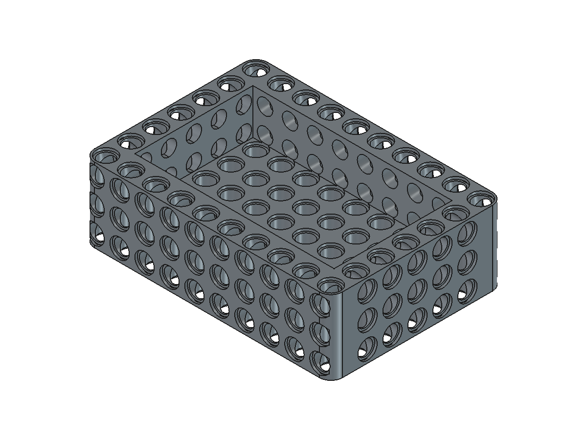

仿麵包板底座做的上方開放電池盒容器，另配一片滿佈 Technic 孔的平面上蓋，上蓋縮小讓開關與出線露出。

aaa3_battery_box_technic（FreeCAD 等角視圖）
| 類型 | 說明／下載 | 大小 |
|---|---|---|
| FCStd | 容器：FreeCAD 參數化模型 aaa3_battery_box_technic.FCStd | 9.9 MB |
| 3MF | 容器：3MF（由最新 FCStd 匯出） aaa3_battery_box_technic.3mf | 2.3 MB |
| FCStd | 上蓋：FreeCAD 參數化模型 aaa3_battery_lid_technic.FCStd | 850 KB |
| 3MF | 上蓋：3MF（由最新 FCStd 匯出） aaa3_battery_lid_technic.3mf | 989 KB |
| PY | 建模腳本（容器＋上蓋） build_battery_box_technic.py | 12 KB |
| PY | 共用模組：馬達座核心幾何、參數表、匯出與 GUI 重存 tt_adapter_core.py | 10 KB |
| PY | 在 FreeCAD 介面重存檔案，寫入縮圖與顯示狀態 gui_finish.py | 2 KB |
FCStd 用 FreeCAD 1.1 開啟（參數在 Params 試算表）；3MF 可直接拖進 Bambu Studio 或其他切片軟體。